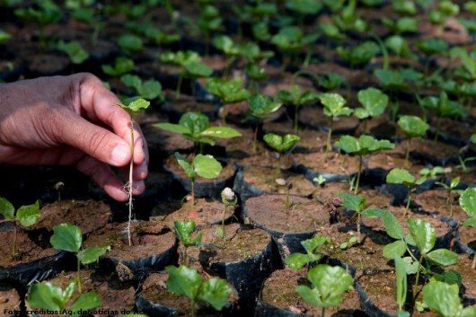
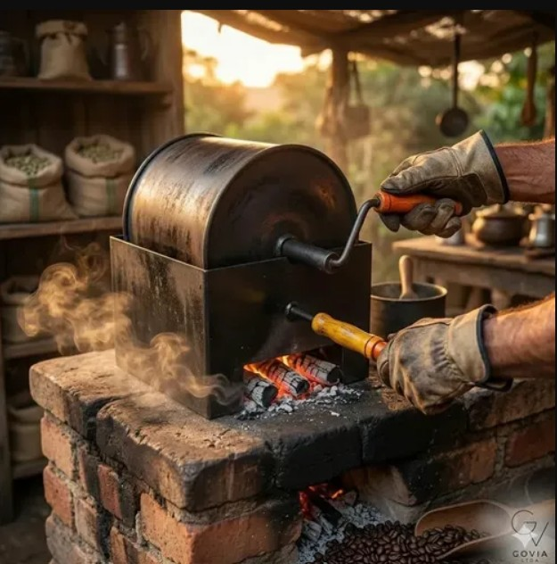
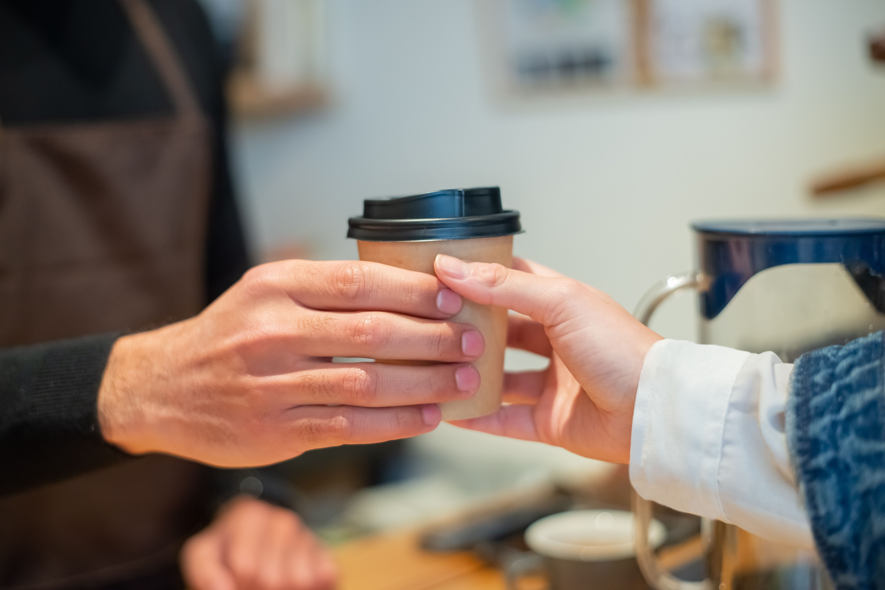

1. Cultivo e Colheita
Valorizamos o pequeno produtor e cooperativas locais no campo, pagando um preço justo e incentivando técnicas de cultivo ecológicas.
Apoiamos e valorizamos as pessoas que fazem o seu café acontecer diariamente.

Valorizamos o pequeno produtor e cooperativas locais no campo, pagando um preço justo e incentivando técnicas de cultivo ecológicas.

O café é torrado localmente com controle rígido de resíduos, gerando empregos na nossa região e garantindo o máximo frescor e qualidade.

Nossos baristas preparam e servem o café em copos descartáveis de papel biodegradável. Além disso, financiamos cursos de capacitação profissional para jovens da comunidade.